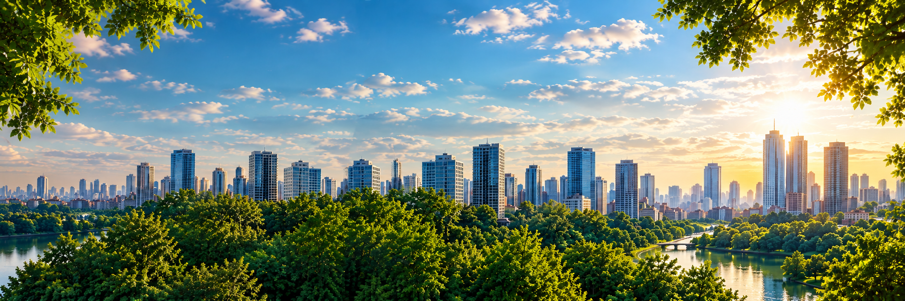

Como as árvores esfriam a cidade?
A sombra impede que o sol aqueça diretamente o asfalto e as paredes, e as folhas liberam vapor de água, o que ajuda a baixar a temperatura ao redor.
Por que arborizar?
Por que falar sobre vegetação urbana?
A vegetação urbana está diretamente relacionada à qualidade de vida nas cidades. Árvores, áreas verdes e outras formas de vegetação ajudam a transformar os espaços urbanos, proporcionando benefícios ambientais, sociais e para o bem-estar da população.
Em meio ao crescimento das cidades e à presença cada vez maior de construções, ruas e áreas pavimentadas, a vegetação exerce um papel importante na redução das temperaturas e na melhoria das condições ambientais.
Além de contribuir para a redução do calor, a presença de árvores pode melhorar a qualidade do ar, aumentar a umidade relativa, oferecer sombra e tornar os espaços urbanos mais agradáveis para as pessoas.
Por que este site existe?
O Arboriza foi criado para reunir informações sobre a importância da vegetação urbana e facilitar o acesso ao conhecimento sobre o tema.
A proposta é apresentar conteúdos de forma clara e acessível, ajudando a compreender como a presença de árvores e áreas verdes pode contribuir para cidades mais frescas, saudáveis e sustentáveis.
Por meio de informações, conceitos e conteúdos educativos, o site busca aproximar as pessoas desse assunto e mostrar que a vegetação urbana faz parte da construção de cidades melhores para todos.
